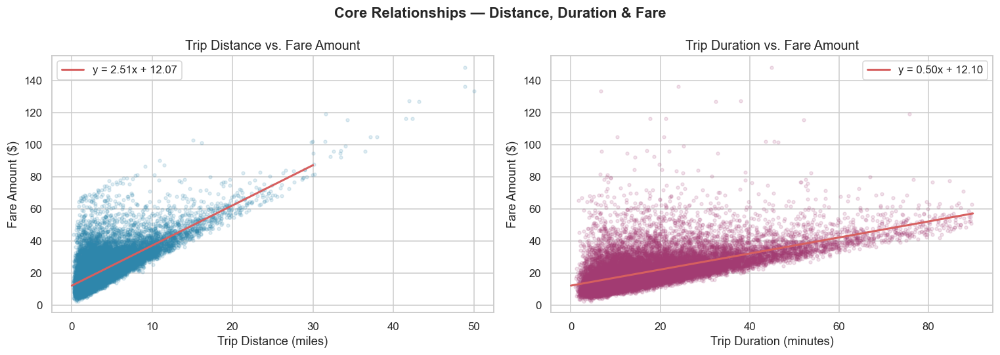
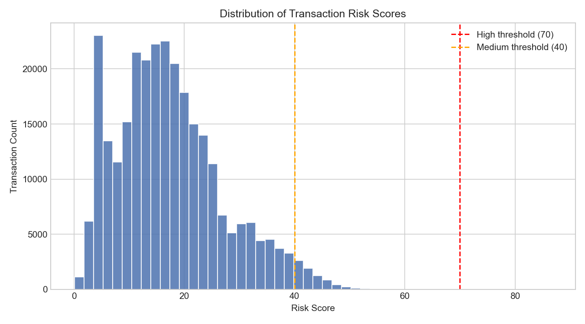
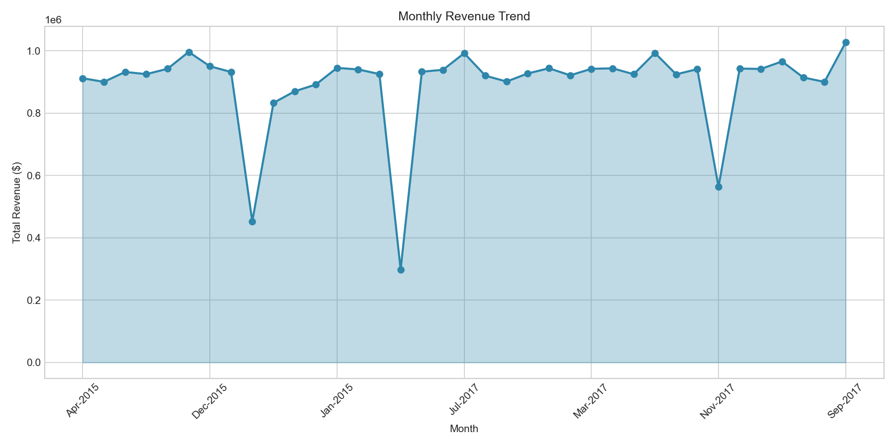
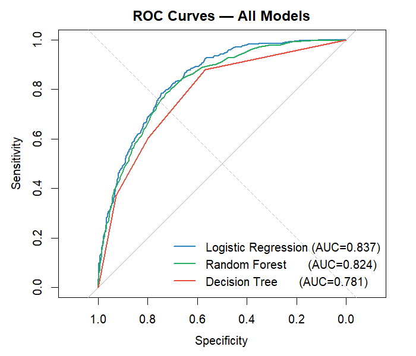

Ronin Portfolio · Dehradun, India
Data Analyst · Operations & Analytics
Prologue · Chapter I
Every journey begins before anyone notices.
In the hills of Dehradun, a boy with a football and a curious mind took his first steps. Not toward a destination — toward a direction. He didn't know the name of the path. He only knew he had to walk it.
The mountains taught him something no classroom could: discipline is not chosen in a moment of inspiration. It is built in the quiet hours, on ordinary days, one decision at a time.
Chapter II
The first sword was forged in a classroom. Not chosen — earned. Three years of programming, systems thinking, relational databases, and the discipline of logical problem solving.
Shree Guru Ram Rai I.T.S., Dehradun · 72.68%
Java · Python · SQL · Relational Databases · Analytical Problem Solving
"Technology became his first language — and his first weapon."
Chapter III
The second sword was not forged in silence. It was forged in the chaos of Mumbai — one of the world's most relentless cities. Operations. Marketing. Business strategy. Planning. Execution under pressure.
ICFAI Business School, Mumbai · CGPA 6.83
Operations Management · Business Strategy · Data-Driven Decision Making · Process Optimization · Performance Analytics
"The student became a strategist. The warrior gained a second sword."
Chapter IV
Theory ends where the real world begins. No more simulations. No more case studies. Real customers. Real data. Real consequences.
The first skirmish. Real distributor data, real inventory discrepancies. Cleaned sales datasets, built deviation-alert dashboards, and conducted business trend analysis that fed actual supply-chain decisions — not presentations.
The real war. 10+ KPIs owned weekly across freight operations. SQL-based anomaly detection surfacing outliers before they breached SLAs. Root-cause investigations with 3–5 cross-functional teams. The ronin became the single source of truth for the entire organisation.
Chapter V
Zoro carries three swords. So does Kuni. Each blade earned — not inherited. Together, they make a warrior who can fight any battle from any angle.
The first blade cuts through noise and inefficiency.
SQL · PostgreSQL · Python · dbt · KPI Tracking · Anomaly Detection · ETL Validation · RCA · Cohort Analysis · A/B Testing
The second blade reveals what is hidden in plain sight.
Power BI · Tableau · DAX · Streamlit · Plotly · Statistical Modelling · R · ggplot2 · Logistic Regression · Random Forest
The third blade turns insight into decisions that matter.
Business Operations · Supply Chain Analytics · Stakeholder Management · Data Storytelling · Process Automation · Cross-functional Collaboration
15 Certifications · Google Advanced Data Analytics (7/7) · PostgreSQL · dbt · IBM Python · Power BI
Chapter VI
Projects are not demonstrations. They are campaigns. Each one carried a challenge, demanded a strategy, required a weapon — and left a lesson carved in data.
Mission I

Mission II

Mission III

Mission IV
Mission V

Mission VI
Current State
Operations & supply-chain analytics — 10+ KPIs owned weekly across freight operations.
A living Investment Journey — a data-driven, disciplined investing record built with intention.
Capital discipline · regular investing · reading a portfolio as a whole.
Chapter VIII
The ronin reaches the mountain path. He does not stop.
Growth never ends. There is always another lesson to learn, another challenge to overcome, another summit beyond the last. The story of a student becoming a strategist, a professional — and eventually a leader — is still being written.
The next chapter hasn't been written yet.
"Some inherit a legacy. Others forge one." — Path of Kuni